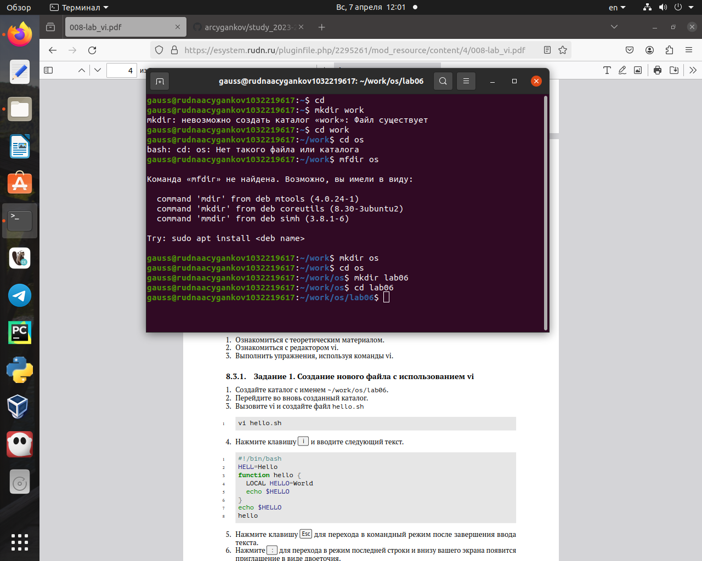
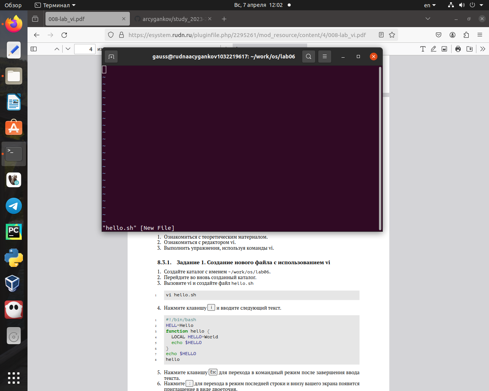
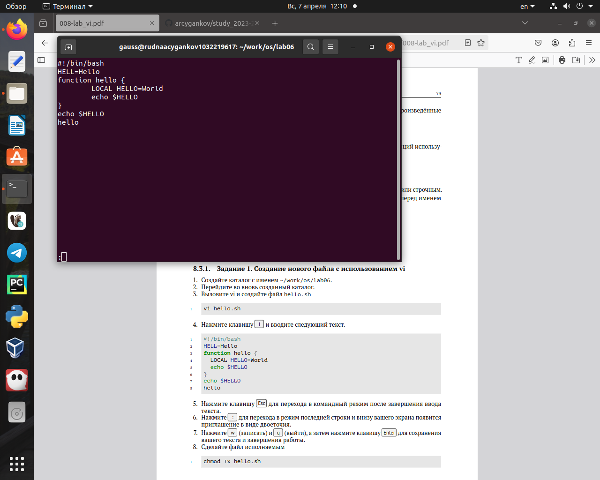
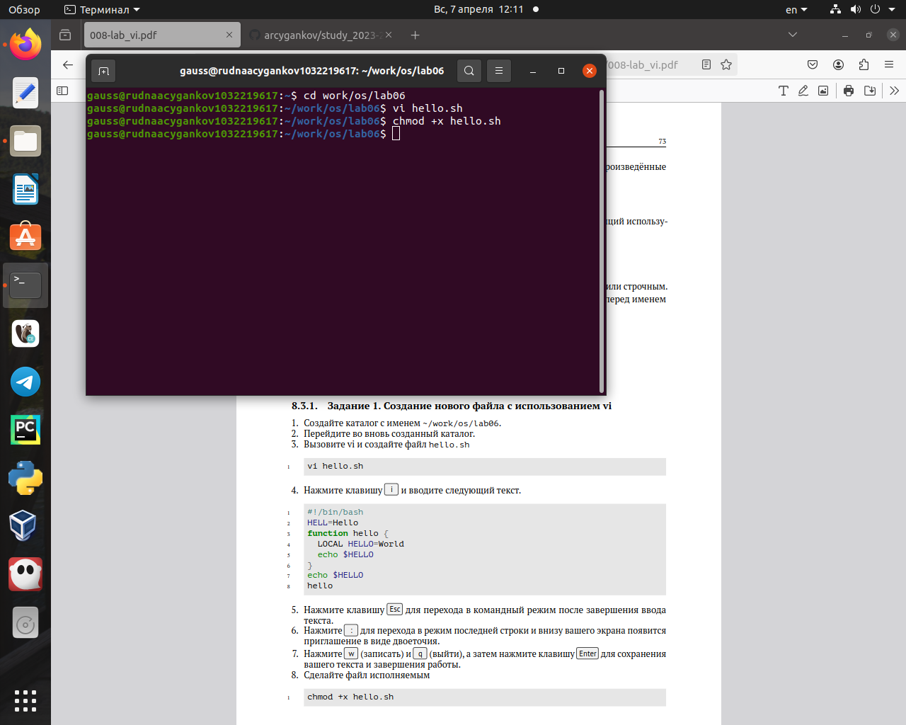
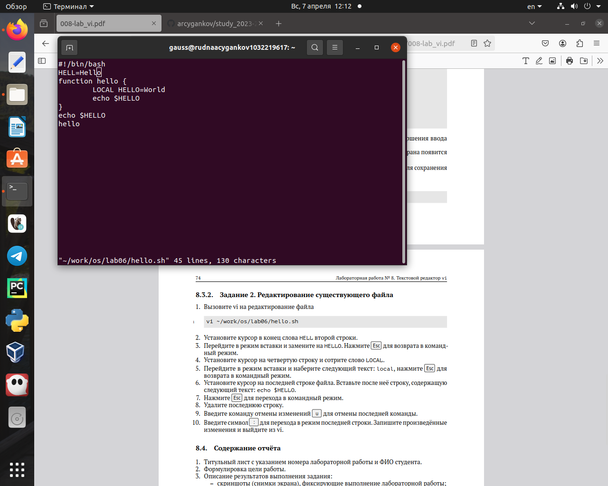
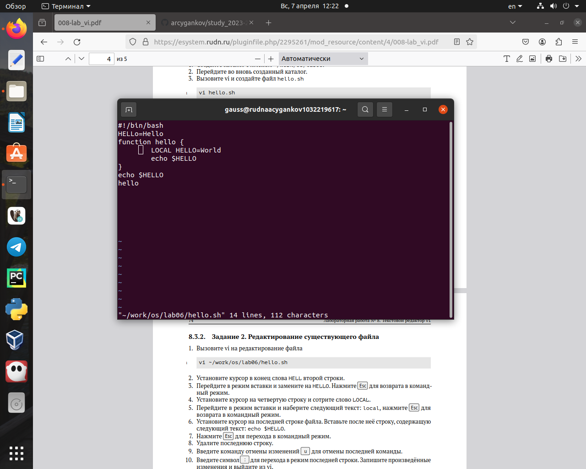
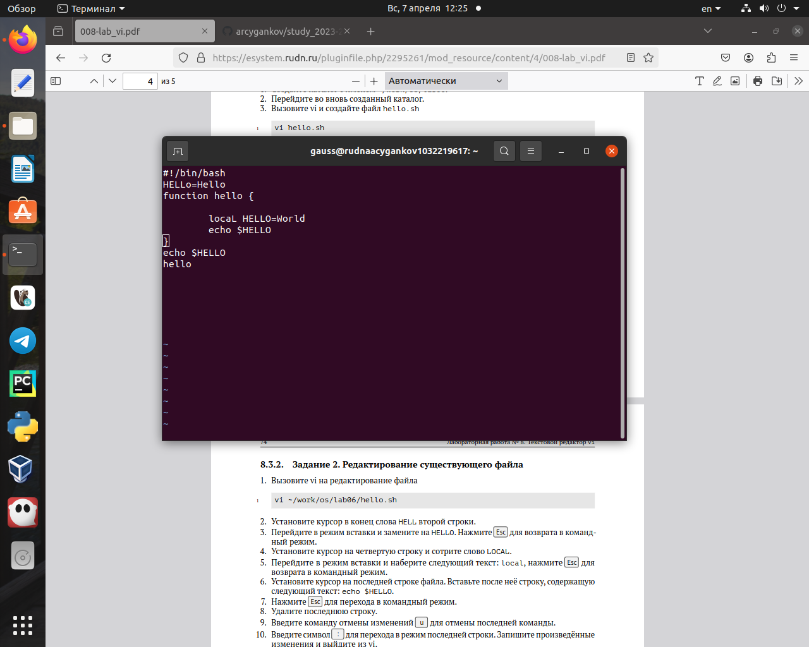
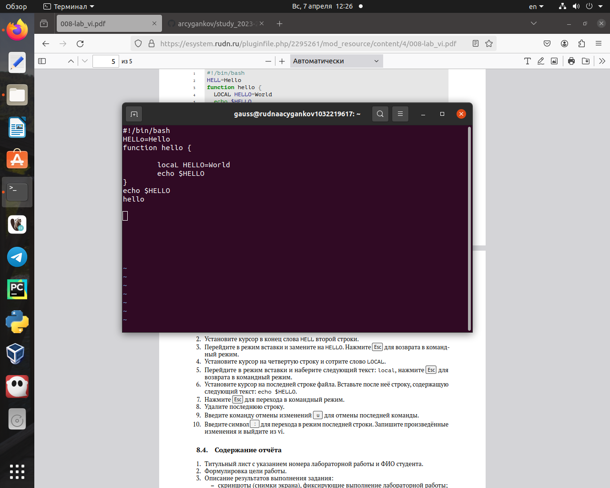
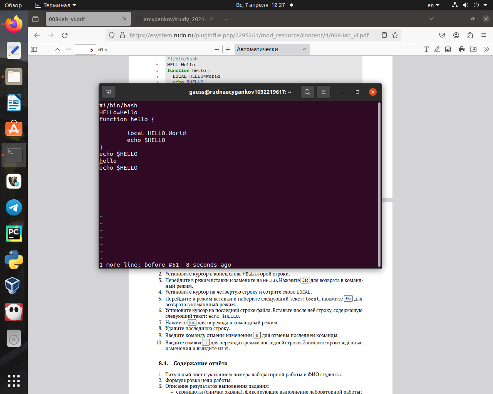

Работа с текстовым редактором vi упростит процесс создания скриптов и позволит быстро вносить правки в файлы системы.
Объект и предмет исследования
Текстовый редактор vi
Цели и задачи
Познакомиться с операционной системой Linux. Получить практические навыки работы с редактором vi, установленным по умолчанию практически во всех дистрибутивах.
Выполнение заданий.
Создайте каталог с именем ~/work/os/lab06
Создайте каталог
Перейдите во вновь созданный каталог
Перейдите во вновь созданный каталог
Вызовите vi и создайте файл hello.sh
Вызовите vi
Нажмите клавишу i и вводите следующий текст
вводите следующий текст
Нажмите клавишу Esc для перехода в командный режим после завершения ввода текста.
Нажмите клавишу Esc для перехода в командный режим
Нажмите : для перехода в режим последней строки и внизу вашего экрана появится приглашение в виде двоеточия
Выхожу из редактора с сохранением введённых данных
Нажмите w (записать) и q (выйти), а затем нажмите клавишу Enter для сохранения вашего текста и завершения работы
w (записать) и q (выйти)
Сделайте файл исполняемым chmod +x hello.sh
Исполняемый файл
Вызовите vi на редактирование файла vi ~/work/os/lab06/hello.sh
Файл
Установите курсор в конец слова HELL второй строки
Курсор в конце строки + замена HELL->HELLO
Установите курсор на четвертую строку и сотрите слово LOCAL. Перейдите в режим вставки и наберите следующий текст: local, нажмите Esc для возврата в командный режим
Стереть слово + написать слово
Установите курсор на последней строке файла. Вставьте после неё строку, содержащую следующий текст: echo $HELLO
echo $HELLO
Нажмите Esc для перехода в командный режим. Удалите последнюю строку
echo $HELLO удаление
Введите команду отмены изменений u для отмены последней команды. Введите символ : для перехода в режим последней строки. Запишите произведённые изменения и выйдите из vi
Итог
Результаты
Вывод:
В процессе выполнения лабораторной работы я получил практические навыки работы с редактором vi, установленным по умолчанию практически во всех дистрибутивах.